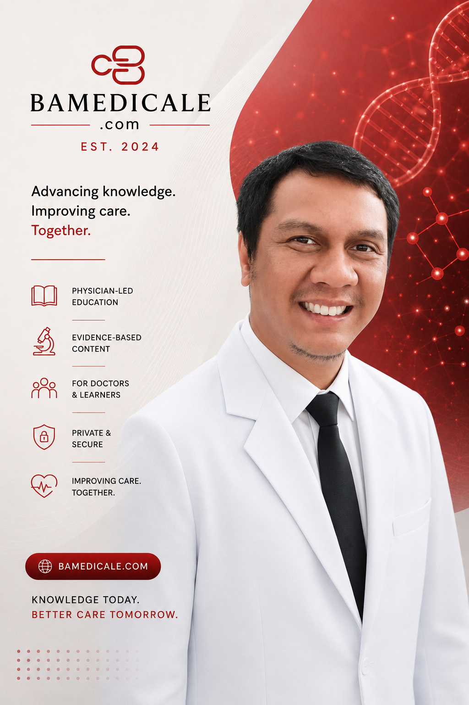

Back to Team
Hospital management & professional journey
dr. Yudi Febriadi MARS
Executive Manager with a background in hospital operations and medical service.
dr. Yudi's professional journey combines medical practice with hospital operations, insurance case mix, education and training services, and inpatient management. Since 2009, he has held a range of medical and management roles at NCC RS Kanker Dharmais, Jakarta.
He completed a Master of Hospital Administration at the University of Indonesia in 2024, following medical education at Universitas Padjadjaran. At BA Medicale, he serves as Executive Manager.
Career journey
Medical practice shaped by hospital operations.
His experience has developed from clinical rotations and general practice into operational management across outpatient, insurance, education and training, inpatient, and medical-service settings.
- 1999-2007
Medical education
Universitas Padjadjaran
Completed medical education at the Faculty of Medicine, establishing the clinical foundation for later practice and health-service management.
- 2004-2007
Clinical rotations
West Java hospital and primary-care settings
Undertook co-assistant rotations in hospitals and community health centres, including surgery, obstetrics and gynaecology, ear, nose and throat care, and public health.
- 2007-2009
Early medical practice
Held medical appointments in health-centre and clinic settings in Bekasi and Bandung, followed by roles in primary care and clinical settings in Greater Jakarta and East Kalimantan.
- 2009-2016
Government medical doctor
NCC RS Kanker Dharmais, Jakarta
Worked across emergency, ward, home-care, and ODC ward services while building experience in hospital-based medical care.
- 2009
Public health service
Puskesmas Kecamatan Betaet, Mentawai Islands
Served as a PTT medical doctor in West Sumatra, adding a community-health setting to his clinical background.
- 2016-2020
Outpatient operations management
Outpatient Unit, NCC RS Kanker Dharmais
Moved into operational management for the outpatient unit, connecting service delivery with day-to-day coordination.
- 2020-2024
Hospital management education
University of Indonesia
Completed the Master of Hospital Administration program at the Faculty of Public Health while continuing professional work.
- 2021-2024
Case mix and education services
NCC RS Kanker Dharmais
Served as Case Mix Manager in the Insurance Unit from 2021 to 2023, then as Service Manager for the Education and Training Unit in 2024.
- 2024-present
Inpatient operations to medical service
NCC RS Kanker Dharmais
Managed inpatient ward operations from 2024 to 2026 and has continued in Medical Service from 2026.
Education & qualifications
Clinical and hospital-management foundations
- Master of Hospital Administration, 2020-2024Faculty of Public Health, University of Indonesia.
- Medical Doctor, 1999-2007Faculty of Medicine, Universitas Padjadjaran.
- EnglishActive professional language capability.
- Digital office toolsMicrosoft Word, Excel, and PowerPoint.
Hospital management
Experience across connected service areas
- Outpatient UnitOperational Manager from 2016 to 2020.
- Insurance UnitCase Mix Manager from 2021 to 2023.
- Education and Training UnitService Manager in 2024.
- Inpatient WardOperational Manager from 2024 to 2026.
- Medical ServiceContinues in Medical Service from 2026.
Professional development
Emergency care, occupational health, and clinical learning
- Advanced Cardiac Life Support, 2009PERKI House, Jakarta.
- Advanced Trauma Life Support, 2008Persahabatan Hospital, Jakarta.
- Occupational health and safety, 2007Training in occupational health and safety at DEPNAKERTRANS, Jakarta.
- Clinical learningEarly continuing medical education in tuberculosis and cardiovascular disease, alongside cervical-cancer early-detection and management education.
Professional and organizational activities
Engagement alongside medical education
- Faculty of Medicine, Universitas PadjadjaranParticipated in BEM FK UNPAD, DKM Asy Syifaa, the Student Research Club, Student Computer Club, student orientation, and charitable fundraising activities.
- School organizationsParticipated in student, technology, basketball, and religious organizations during secondary education.
- BA MedicaleServes as Executive Manager, contributing a perspective shaped by medical practice and hospital service management.